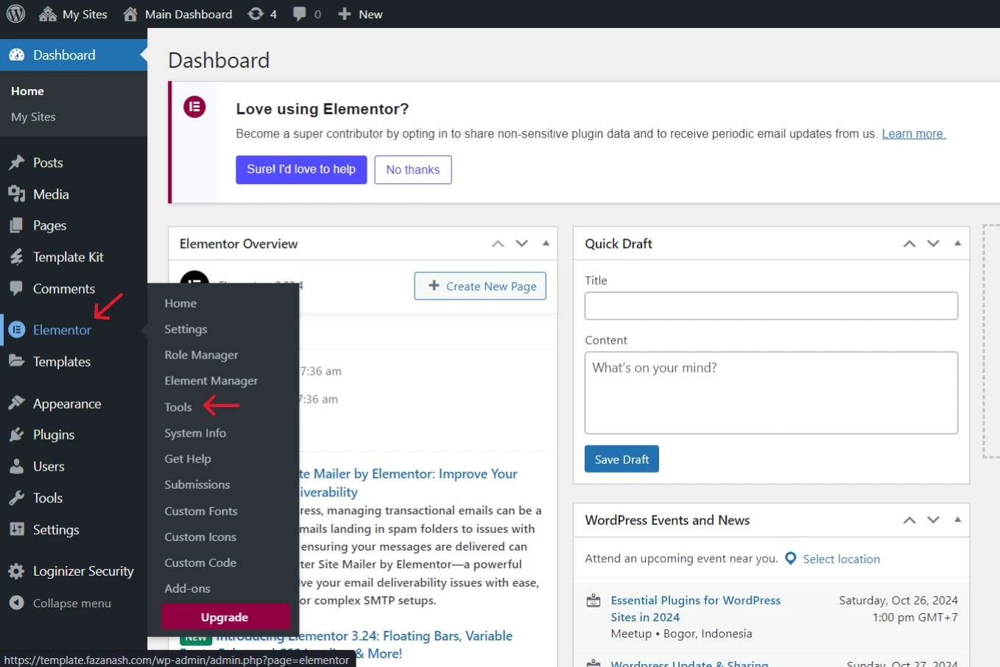
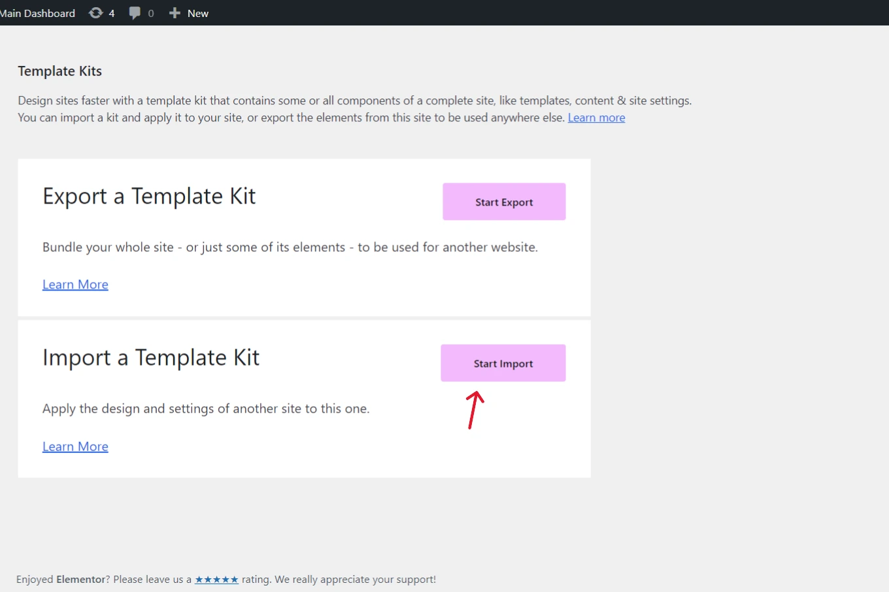

Furnice - Architecture Agency & Interior Designer
This guide will help you set up WordPress and launch your newly purchased Elementor-based website template from TemplateMonster. Follow these steps to get your site running quickly and efficiently.
Before uploading the template kit file, we will first install and configure WordPress. If you have already installed and configured WordPress, you can proceed directly to importing the template you have purchased by follow this step Let’s import your template kit.
Important! Elementor recommends backing up your site before importing a kit file.
WordPress Specification
Requirements:
- A WordPress.org installation (self-hosted)
- Elementor Plugin (free or Pro version)
Steps to Configure:
- Install WordPress: Download from WordPress.org and follow their installation guide
- Install Elementor: From your WordPress dashboard, go to “Plugins” > “Add New” > search for Elementor, and install it
- Activate Theme/Template: Go to “Appearance” > “Themes” to upload and activate your purchased template
For more detailed support, feel free to explore this handy links for WordPress resources:
- WordPress Codex. This comprehensive resource offers general information about WordPress and guides you through the installation process on your server.
- First Steps With WordPress. Explore various topics related to WordPress to kickstart your journey with this platform.
- FAQ New To WordPress. Find answers to the most frequently asked questions by WordPress beginners.
- First Site Guide. Access easy-to-follow, step-by-step guides and valuable tips to help you establish your online presence and achieve success.
Import the template kit
-
Extract Package
Once you extract the purchased package, you'll find three files: the Main File, this Documentation, and Screenshots of each page in the template.
-
Go to your WP Admin and Select Elementor > Tools

-
In the right panel, click the Import/Export Kit tab

-
Click Start Import

-
Drag and drop the exported zip file into the window or click Select File and navigate to the zip file. You may receive a warning about importing zip files. If you created the zip file or trust the source of the zip file,
continue with the import.

-
Click Next

-
Select which parts of the kit you want to import
- Templates: imports site parts such as headers and footers plus any template you saved. Only select this if you want to recreate the site elements with different content.
- Content: Imports the pages, posts, and custom post types. It is good for importing the text and images in the kit.
- Site Settings: Import the global fonts, theme style, layout, lightbox, and background settings. Only select this if you want to replicate the look and feel of the site.
Tip: If you want to import the entire site as is, select all three. -
Click Import
 You may receive a warning that the kit contains SVG files. If you created the export kit or trust the source of the export kit, Enable SVG imports.
You may receive a warning that the kit contains SVG files. If you created the export kit or trust the source of the export kit, Enable SVG imports. -
Click Close to end the import process.

Congratulations on Importing Your Elementor Template👏. Great job! You've imported your Elementor template to WordPress. To customize, follow the instructions below. Explore Elementor's features to make your site unique. Enjoy building!
Customize the Font and Color
- Open one of the Imported page with Edit with Elementor option
- Navigate to the upper left of the panel and select Site Settings
- Choose what do you want to customize, the Global Colors or Global Fonts
- After that, change the color or font according to your style
- Don’t forget to save your settings with click the Save Changes button in the bottom left